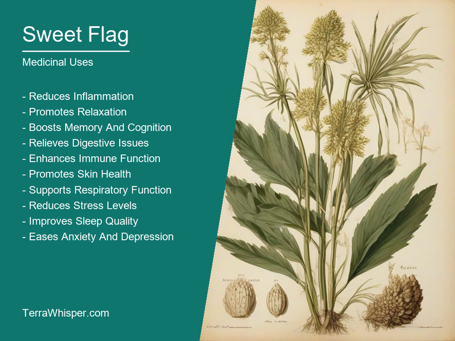
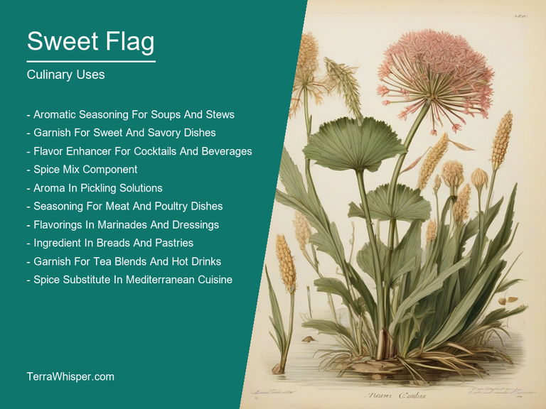
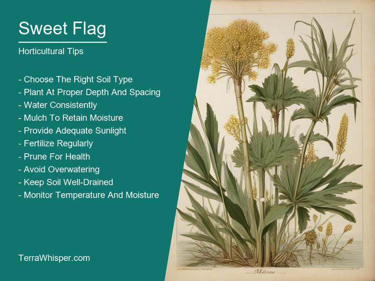
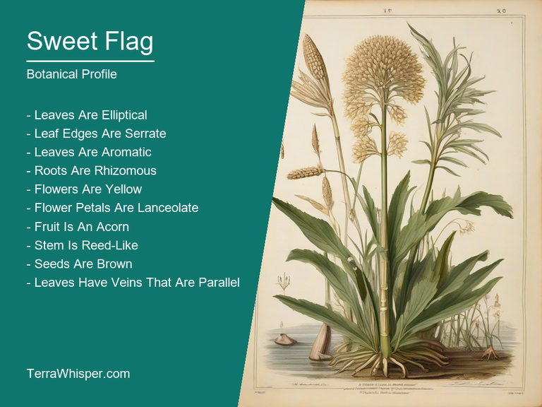
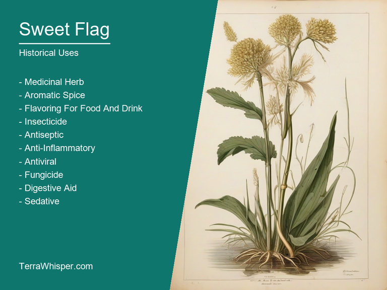

What To Know Before Using Sweet Flag (Acorus Calamus)

Sweet flag, scientifically known as Acorus calamus, is a versatile plant that has been used for centuries in both medicinal and culinary applications. Its rhizomes are rich in essential oils and have been traditionally used to treat various health conditions, such as digestive problems, inflammation, and respiratory issues. In addition to its medicinal properties, sweet flag is also a popular ingredient in herbal teas and various traditional cuisines. Its crispy texture and mildly sweet taste make it an excellent addition to soups, stews, and salads.
As an ornamental plant, sweet flag is highly valued for its architectural foliage and unique growth habit. It forms clumps of tall, slender leaves that can grow up to 3 feet in height. The leaves are arranged in a fan-like pattern and have a glossy sheen, which adds visual interest to garden beds and borders. Sweet flag also produces small, fragrant flowers that emerge on spikes above the foliage during late summer and early fall. These flowers attract pollinators such as bees and butterflies, making sweet flag an excellent addition to any wildlife-friendly garden.
From a botanical perspective, Acorus calamus is a member of the Araceae family and is native to wetlands and marshes across North America, Europe, and Asia. It thrives in moist, well-drained soils and can tolerate a variety of light conditions, from full sun to partial shade. Sweet flag is also relatively low maintenance, requiring minimal pruning and little fertilization. Throughout history, sweet flag has been culturally significant to many societies, with its rhizomes used in traditional medicine, rituals, and even as a flavoring agent for beer and other beverages. Today, it remains an important plant species that continues to captivate gardeners, herbalists, and botanists alike with its unique combination of culinary, medicinal, and ornamental attributes.
In this article, you will discover what are the medicinal and culinary uses of sweet flag. Then, you'll learn how to cultivate it, what is its botanical profile, and how it was used historically.
What Are The Medicinal Uses Of Sweet Flag?
Sweet flag is one of the most versatile medicinal plants that has been used for centuries to treat various health conditions. It has numerous health benefits and medicinal properties such as anti-inflammatory, antispasmodic, antiseptic, antiviral, and antifungal effects. The plant is commonly used to treat digestive problems, neurological disorders, respiratory infections, and skin conditions. It has been found to be effective in reducing inflammation and relieving pain in arthritis, colitis, and other inflammatory diseases. Sweet flag also has a sedative effect that helps to calm the nervous system and alleviate anxiety and stress.
The following illustration lists the most important uses of sweet flag in medicine.

The medicinal constituents of sweet flag include volatile oils, polysaccharides, flavonoids, and sterols. These compounds are responsible for the plant's therapeutic properties. The most important constituent is the volatile oil, which contains calambin and calambenin, two active compounds that have been shown to have anti-inflammatory and neuroprotective effects. Other important components include beta-amyrin and stigmasterol, which have antispasmodic properties, and a variety of flavonoids that have antioxidant and antiviral properties.
The most commonly used parts of sweet flag are the rhizomes, leaves, and flowers. Rhizomes are the underground parts of the plant that contain the highest concentration of medicinal compounds. They can be used to make teas, tinctures, and extracts. Leaves can also be used to make teas and infusions, while flowers are used in traditional Ayurvedic medicine for their cooling properties. Rhizome extract is the most widely available form of sweet flag and is commonly used in herbal remedies for digestive problems, neurological disorders, and skin conditions.
While sweet flag is generally considered safe, it can cause side effects in some individuals. The most common side effects include nausea, vomiting, diarrhea, and stomach upset. It may also interact with certain medications, such as blood thinners and sedatives. People with allergies to other members of the Asteraceae family, which includes ragweed, daisies, and chamomile, may be at risk for an allergic reaction to sweet flag. Pregnant women should consult their healthcare provider before using sweet flag, as it may interact with hormonal changes during pregnancy.
To ensure the safety and effectiveness of sweet flag, it is important to follow certain precautions when using it. First, always use high-quality, organic sweet flag from a reputable source. Second, consult a healthcare provider before using sweet flag if you have any pre-existing medical conditions or are taking medications. Third, start with small doses and gradually increase as needed. Fourth, avoid using sweet flag for prolonged periods of time without consulting a healthcare provider. Finally, always store sweet flag in a cool, dry place away from direct sunlight to preserve its medicinal properties.
What Are The Culinary Uses Of Sweet Flag?
Sweet flag has been used in various dishes, from ancient to modern times. It was used in traditional Chinese medicine and Ayurvedic practices for centuries. In Western cuisine, sweet flag is often used as a spice or flavoring agent in savory dishes such as soups, stews, and sauces. Its sweet, aromatic scent makes it perfect for adding depth to these dishes. Sweet flag can also be used in desserts, such as ice cream and pastries, to add a hint of sweetness and nuttiness. It is often paired with other herbs and spices to create unique flavor combinations.
The following illustration lists the most common uses of sweet flag for culinary purposes.

Sweet flag has a complex flavor profile that is hard to describe in words. Its taste is often described as a combination of sweet, nutty, and slightly bitter notes. The aroma is rich and fragrant, with hints of vanilla and almond. When used in savory dishes, sweet flag adds depth and complexity to the flavor without overpowering it. It complements other herbs and spices well, creating a harmonious blend of flavors. In desserts, sweet flag adds a subtle sweetness that pairs well with other ingredients.
All parts of the sweet flag plant are edible, but some are more commonly used than others. The root is the most commonly used part of the plant and has been used in traditional medicine for centuries. It is also used in culinary dishes as a flavoring agent or spice. The leaves and flowers can be used in salads or as a garnish, but they are not commonly used in cooking. The seeds can be roasted and used as a snack or added to baked goods for a nutty flavor.
When using sweet flag in cooking, it is important to use it sparingly. Its strong flavor can easily overpower other ingredients if too much is used. It is also important to store sweet flag properly to maintain its flavor and aroma. Dried sweet flag should be stored in an airtight container in a cool, dark place away from direct sunlight. Fresh sweet flag should be used within a few days of purchase and stored in the refrigerator. When cooking with sweet flag, it is best to use it towards the end of the cooking process to avoid losing its flavor and aroma.
While sweet flag is generally considered safe to consume, there are some potential side effects that should be aware of. In large quantities, sweet flag can cause stomach upset and diarrhea. It can also interact with certain medications, such as blood thinners, so it is important to consult with a healthcare professional before using sweet flag if you have any pre-existing medical conditions or are taking any medication. Additionally, some people may be allergic to sweet flag and experience skin irritation or other adverse reactions when consuming it. It is always important to use sweet flag in moderation and to be aware of its potential side effects.
How To Cultivate Sweet Flag In Your Garden?
Sweet flag (Acorus calamus) is a hardy perennial that prefers moist soil and full sun. To grow this plant, start by preparing a well-draining soil mix of peat moss, perlite, and vermiculite. Mix in some compost or well-rotted manure to provide nutrients. Plant the rhizomes about 2 inches deep and spaced about 18 inches apart. Water the area thoroughly and keep the soil moist during germination, which usually takes 7-10 days. Once established, sweet flag can tolerate some shade but prefers full sun. It grows to a height of 3-4 feet and has feathery foliage that is green in summer and turns yellow in fall.
The following illustration lists the most important tips to cutlitvate sweet flag.

Ideal growing conditions for sweet flag include moist soil that is well-drained, full sun exposure, and a temperature range of 60-75°F (15-24°C). The plant prefers slightly acidic to neutral soil with a pH of 6.0-7.5. It also requires good drainage to prevent root rot. Sweet flag is drought-tolerant but needs regular watering during dry spells.
Maintenance of sweet flag involves removing any dead leaves or debris and pruning back the foliage in late summer or early fall to encourage new growth the following year. The plant also benefits from being divided every 2-3 years to prevent overcrowding and promote healthy growth. In addition, sweet flag can be harvested for its medicinal properties, with the rhizomes being used to make tea or tinctures. Regular inspection is important to ensure the absence of pests or diseases that could harm the plant.
What Is The Botanical Profile Of Sweet Flag?
The botanical name of sweet flag is Acorus calamus. This plant belongs to the domain Eukarya, kingdom Plantae, phylum Tracheophyta, class Liliopsida, order Poales, family Araceae, genus Acorus, and species calamus. The common names for this plant are sweet flag, flag, calamus root, and eelgrass.
The following illustration display the botanical profile of sweet flag.

Sweet flag is a perennial herb that grows up to 2 meters tall. It has a thick, fleshy stem with a distinctive aroma. The leaves are arranged in a rosette and are oval in shape with serrated edges. The plant produces small, white flowers on an umbellate inflorescence.
There are two main variants of sweet flag, which are the broad-leaved and narrow-leaved varieties. The broad-leaved variety has wider leaves with a longer petiole than the narrow-leaved variety. Additionally, the broad-leaved variety tends to have more robust stems and larger flowers than the narrow-leaved variety.
Sweet flag is native to wetlands and streamsides of North America, Europe, Asia, and Africa. It prefers moist soils and can tolerate full sun or partial shade. In addition, the plant is also found in aquatic habitats such as marshes, swamps, and rivers.
Sweet flag has a diploid life cycle with a sporophyte phase that produces seeds. The seeds are dispersed by water and animals, which consume the fruit and excrete the seeds in their feces. The plant also has an antheridium phase that produces pollen, which is fertilized by pollen from another flower to produce seeds.
What Are The Historical Uses Of Sweet Flag?
Sweet flag has a long history of use in traditional medicine, dating back thousands of years. It was believed to have calming and soothing effects on the nervous system, making it a popular remedy for anxiety, stress, and other mental health conditions. In ancient Greece, sweet flag was used to treat epilepsy and headaches. The plant was also thought to help with digestion, particularly when used as an infusion or tea.
The following illustration lists the most well known historical uses of sweet flag.

Sweet flag played an important role in divination, particularly among the Celts. It was believed that by using the plant's aromatic oil, one could communicate with the spirits and gain insight into the future. The plant was often placed on altars or used during rituals to help facilitate communication with the gods. Today, sweet flag is still considered an important herb in many spiritual practices.
There are several legends surrounding sweet flag. One popular legend tells of a young girl who was lost in the woods and stumbled upon a small cottage. The kind old woman who lived there offered her some tea made from sweet flag, which soon put the girl to sleep. When she woke up, she found herself back at home, safe and sound. From that day on, sweet flag became a powerful symbol of protection and guidance for those in need.